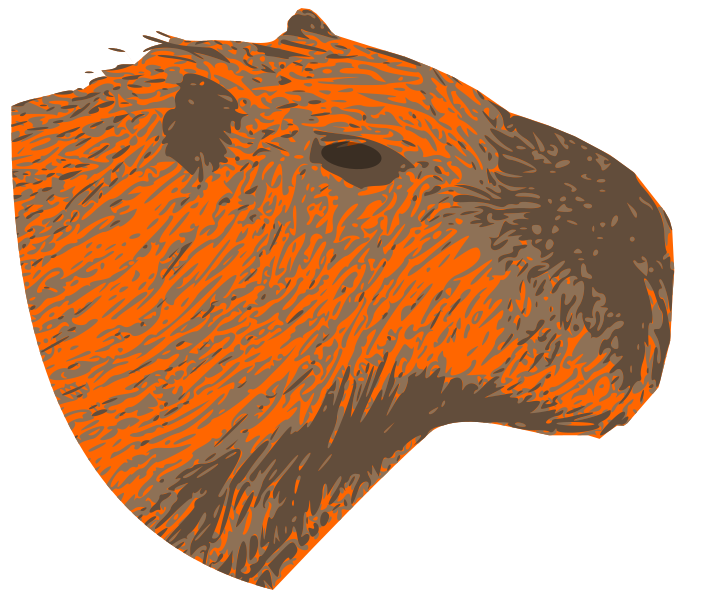

<mat-sidenav-container class="example-container">
    <mat-sidenav #drawer mode="side" position="end" [opened]="isShowing" opened class="side-nav">
        <tool-menu></tool-menu>
    </mat-sidenav>
    <mat-sidenav-content>
        
        <div class="float">
            <button mat-fab color="primary" mat-button (click)="drawer.toggle()" class="material-symbols-outlined">
                <span *ngIf="drawer._animationState == 'void'; else content" class="material-symbols-outlined icon-margin">
                    arrow_back_ios
                </span>
                <ng-template #content>
                    <span #backArrow class="material-symbols-outlined">
                        arrow_forward_ios
                    </span>
                </ng-template>
            </button>
        </div>
        <button class="redo-button" mat-flat-button color="primary" (click)="realoadCavnas()"> redo </button>
        <div id="canvas" class="canvas"></div>
    </mat-sidenav-content>
</mat-sidenav-container>